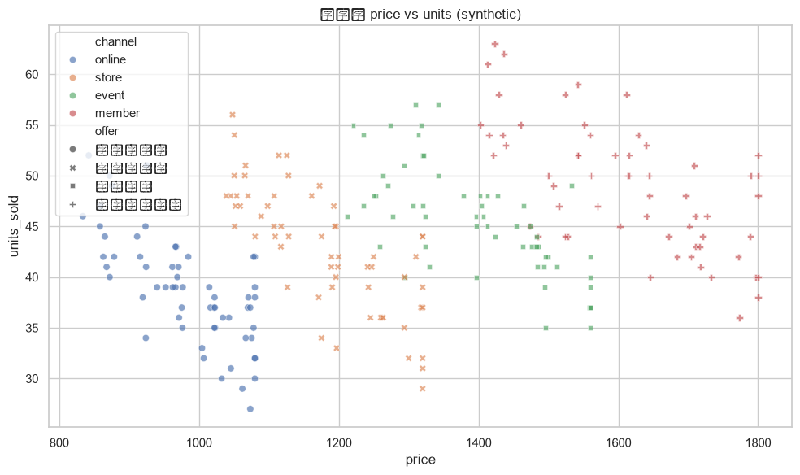

Student step
把『訂一個價格』改寫成可驗證的上市決策
- 本步目標
確認資料粒度、虛擬資料邊界與今日決策問題，成功載入 960 列、15 欄資料。
- 操作路徑
Day 3 Notebook → 1. 載入資料與套件（Markdown 儲存格 1、程式碼儲存格 2）
- 操作動作
在課程網站按『在 Colab 開啟』，登入 Google 帳號後選擇『檔案 → 在雲端硬碟中儲存副本』，檔名改為 D3_組別_企業名稱。
下載並上傳 day3_launch_pricing.csv 到 Colab 左側檔案區；確認檔名沒有被瀏覽器自動加上 (1)。
先閱讀 Notebook 最上方的資料使用邊界，再用自己的話在文字儲存格寫下『這份資料能支持什麼、不能證明什麼』。
展開第一段程式碼，逐行辨認 Path、pandas、numpy、matplotlib、seaborn 及 candidate_paths 的用途，不要先修改非 TODO 程式。
執行第一格；核對資料路徑、資料尺寸與前三列，特別確認 company、offer、price、units_sold、unit_cost、fixed_cost、is_synthetic。
點開左側變數檢查器或執行 df.dtypes，確認 date 目前可能仍是文字型態，並在筆記註明後續必須轉成 datetime。
把今天的決策問題改寫成一句完整句：『針對＿＿企業的＿＿商品，我要比較＿＿，並以＿＿作為停損依據。』
- 參數設定
本段不修改模型參數；唯一可變動的是 CSV 所在位置。DATA_FILENAME 必須維持 day3_launch_pricing.csv。
- 執行方式
執行程式碼儲存格 2。若 Colab 剛重啟，先等套件完成匯入，再確認 OUTPUT_DIR 已建立。
- 預期輸出
預設教材應顯示資料尺寸 (960, 15)，前三列屬於雜草町，is_synthetic 為 True。不同排序不影響判斷，但欄位數與虛擬標記必須一致。
- 結果解讀
完成句型：『資料的每一列代表＿＿時間的一筆商品／通路觀察；今天可用來練習＿＿，但不能宣稱＿＿。』請明確寫出資料粒度與因果限制。
- 常見錯誤與修復
- Symptom
FileNotFoundError：找不到 day3_launch_pricing.csv
- 可能原因
CSV 未上傳、檔名被改寫或上傳到其他工作階段
- 修正方式
在左側檔案區重新上傳，右鍵複製路徑核對檔名；不要把 Excel 檔誤當 CSV。
- Symptom
資料尺寸不是 960×15
- 可能原因
讀到其他日期的資料、CSV 被另存或篩選後覆蓋 df
- 修正方式
重新開啟原始 Notebook 副本並重新讀取課程提供的 day3 CSV；此時不要執行任何篩選。
- Symptom
中文字顯示亂碼
- 可能原因
以錯誤編碼另存 CSV
- 修正方式
不要用記事本另存原始檔；重新下載課程版本，以 pd.read_csv(data_path) 直接讀取。
- 完成檢核
請向同組同學說明：為什麼一開始就必須確認 is_synthetic，而不是等到報告最後才加一行小字？
